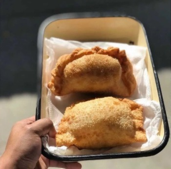

Empanadas Tucumanas

A northern classic
The empanadas are made in different shapes and with diferent ingredients all over the world. is one of those dishes that cannot fail in being tasty and if you don't like one version of it, you can always taste another kind.
for those that doesn't know what are the empanadas, think of them as dough filled with whatever you can think and that can have different shapes. There are versions with meat, fish, vegetables,mushrooms and a lot of other things.
In this opportunity you will learn how to make empanadas in the way that tucumanos (people from tucumàn, a state in the north of Argentina) do it.
Ingredients
- 1/2 kg tenderized rosemeat
- 200 grams of fat (it can be from any animal you want)
- 1/2 kg of onions
- 2 eggs
- green onions
- salt
- 1 and a half tablespoons of paprika
- 1/2 tablespoon of ground chili
- 1/2 tablespoon of cumin
- rosemeat broth
Steps
this dish needs a little more work than the others presented in this page so the steps guide will consist of three parts: tenderizing the meat, making the dough and the preparation itself.
how to tenderize the rosemeat
- Degrease the rosemeat with a sharp knife. it isn't necessary to take all of it so don't stress too much if there are some parts hard to take out.
- put the rosemeat on a cooking pot with a vegetable broth. once the meat is placed, put some thyme,oregano and rosemary to spice up a bit.
- let it cook for 2 hours with minimum heat
- once the time has passed take out the meat and keep the broth as is needed in the next steps.
Hot to make the dough
- Mix 500gr of flour 0000 with 7gr of salt and 75gr of butter in a counter or table.
- Knead the ingredients with your hands till they mix completely.
- Add 190 ml of warm water or the broth you keep and knead until you have a smooth and homogeneous bun.
- cut the bun into two or three parts. Expand them with your hand and cut them into circular shapes of around 10 cm.
Now that the meat is tender and you made the "tapas" to fill with the filling you can start to make the empanadas tucumanas.
Preparation
- in a frying pan or cooking pot melt the fat.
- once the fat is melted put a previously chopped onion with a little bit of salt. cook with medium heat for 5 minutes.
- Once the time has passed add the tender rosemeat chopped in tiny bits. remove from the fire and add the broth with paprika, cumin and ground chili. Let it rest for a while.
- while you let the filling cool, cut the green onion with a boiled egg.
- Extend the dough in your hand or in a table an fill it with the cold filling and a little bit of egg and green onion you previously chopped.
- close the dough. you can do it the way you want or do it the traditional way with "repulgue". Repeat the process with all the doughs.
- once you can't do more, put all of them in a preheated oven dish and cook them in a preheated oven at 180° for 20 minutes.
- final and most important step: Enjoy the food!
credits for the recipe:
Thanks to paulinacocina for the recipe!
Go back to main page